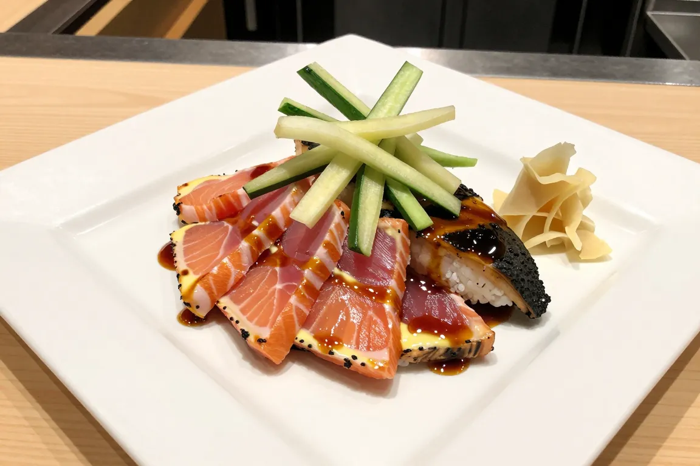

kjøkken · 1983–2005 · også: Øst-vest-fusjon, Euroasiatisk kjøkken, Hawaii Regional-kjøkken
Fransk teknikk og råvarer fra California med sauser og fisk fra Asia. Chinois on Main (1983), Roy's i Honolulu (1988) og Matsuhisa og Nobu fra 1987 satte soya, ingefær, miso og rå fisk på en anrettet meny.

Kjerneidé
En kokk fra én tradisjon kan bruke spiskammeret og smakene fra en annen, hvis kokken holder balansen i hver rett og presisjonen i teknikken.
Designprinsipper
Lag mat med fransk metode og krydre med sauser fra Asia: soya, ingefær, miso, chili og sitrus.
Stek eller wok hovedstykket raskt og la midten være rå.
Sett rå fisk sammen med en varm olje eller en skarp dressing av yuzu og soya.
Bygg en saus av en reduksjon av fond, et smør og en asiatisk krydring, for eksempel en smørsaus med soya og sennep.
Server en blanding av små retter midt på bordet, eller en anrettet tallerken med ett hovedstykke.
Bruk råvarer fra Stillehavet: tunfisk, skalldyr, tropisk frukt og lokale grønnsaker.
Sett maten på en lys tallerken med en tydelig form, og pynt den med en urt eller noen strimler grønnsak.